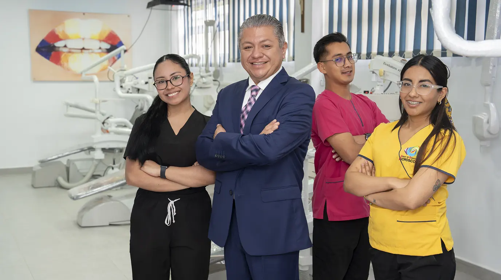
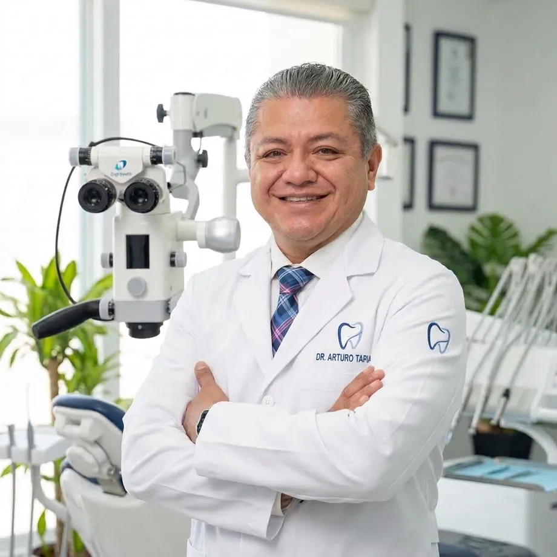
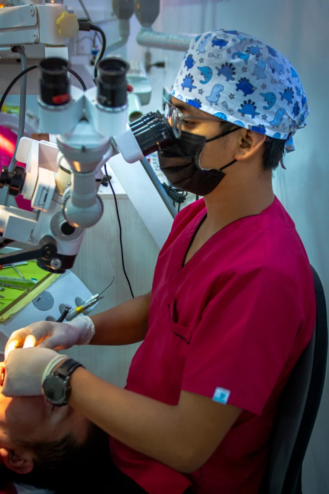
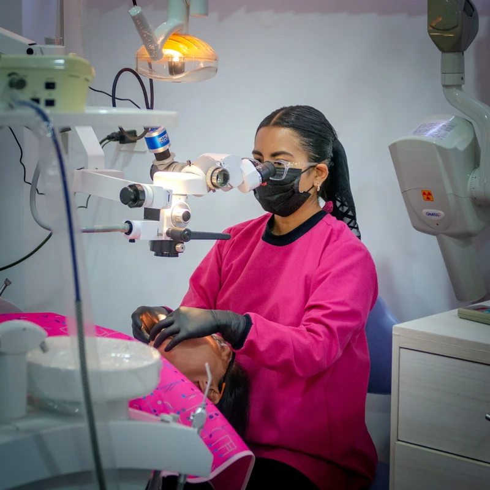
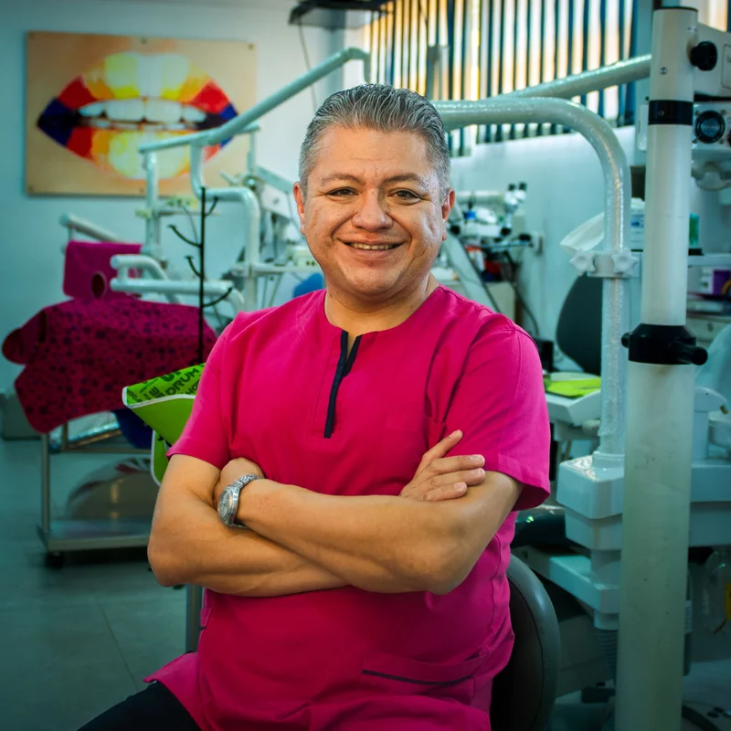

Miedo al procedimiento
La razón número uno para posponer la cita.

Precio de campaña válido hasta el 24 de octubre de 2026.
Un detalle que no se detecta puede convertirse en un nuevo problema. Con micro-odontología observamos con mayor claridad y tratamos con precisión, reduciendo riesgos y protegiendo mejor tu sonrisa.

Quieres cuidar tu sonrisa, pero es normal que te preocupe el dolor, un tratamiento invasivo o tener que pasar por el mismo procedimiento más de una vez.
La razón número uno para posponer la cita.
La incomodidad empieza antes de sentarte en el sillón.
Se remueve más tejido sano del que hace falta.
Diagnósticos menos precisos alargan cada cita.
Con un microscopio, te atendemos con más precisión.


Tratamientos que conservan más tejido dental sano, porque se interviene únicamente la zona afectada.
Al intervenir solo donde realmente hace falta, cada cita aprovecha mejor el tiempo y el tratamiento.
Procedimientos con menos sorpresas a mitad de la cita, porque el diagnóstico se hace antes de empezar.

El Dr. Arturo Ramírez Tapia en su consultorio de San Diego Metepec, junto al microscopio con el que trabaja.
Experiencia que marca la diferencia: más de 25 años de ejercicio clínico y fundador de la primera clínica de odontología general asistida con microscopio en la zona Tlaxcala–Puebla.
Sin sorpresas ni cobros ocultos. Tu primera valoración ya incluye todo el diagnóstico con tecnología de precisión.
Precio de campaña hasta el 24 de octubre de 2026.
Financiamiento a meses sin intereses disponible con Visa, Mastercard y American Express.
Consultar mi casoEl costo exacto de tu tratamiento se confirma en tu primera valoración, según tu caso.
“La atención es muy amable, te dan seguridad, me tuvieron mucha paciencia, el consultorio está muy limpio, son puntuales con las citas.”
“Amables en la atención, accesibles cuando se agenda la cita, respetando los tiempos, no demorando en la atención.”
“Fue excelente tanto por el Dr. Arturo como por el resto del equipo… muy amables, cariñosos y profesionales, ayudándome a tomar la mejor decisión.”
Los testimonios reflejan la experiencia personal de cada paciente y no constituyen una promesa de resultado. Cada tratamiento se determina de forma individual según la valoración clínica.
Es un enfoque de diagnóstico y tratamiento que usa magnificación óptica de alta precisión para ver detalles del diente invisibles a simple vista, permitiendo intervenciones más exactas y conservadoras.
Al ser más preciso y menos invasivo, la experiencia suele ser más cómoda, no menos — se interviene solo lo necesario.
Una revisión normal depende de la vista directa del dentista; con microscopio se detectan lesiones y detalles en etapas mucho más tempranas.
Depende del caso — se determina en tu valoración inicial con el doctor.
La duración se confirma al agendar, según el motivo de tu consulta. Escríbenos por WhatsApp y te damos el detalle.
$900 MXN (antes $1,100), e incluye evaluación con microscopio y radiografías digitales.
Escríbenos por WhatsApp y agenda tu valoración con microscopio. Te respondemos con la información que necesites, sin compromiso.
Agenda tu valoración por WhatsApp